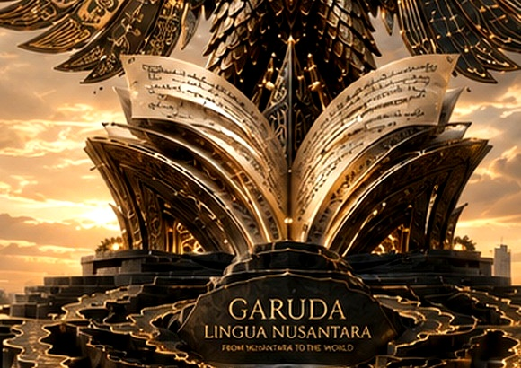
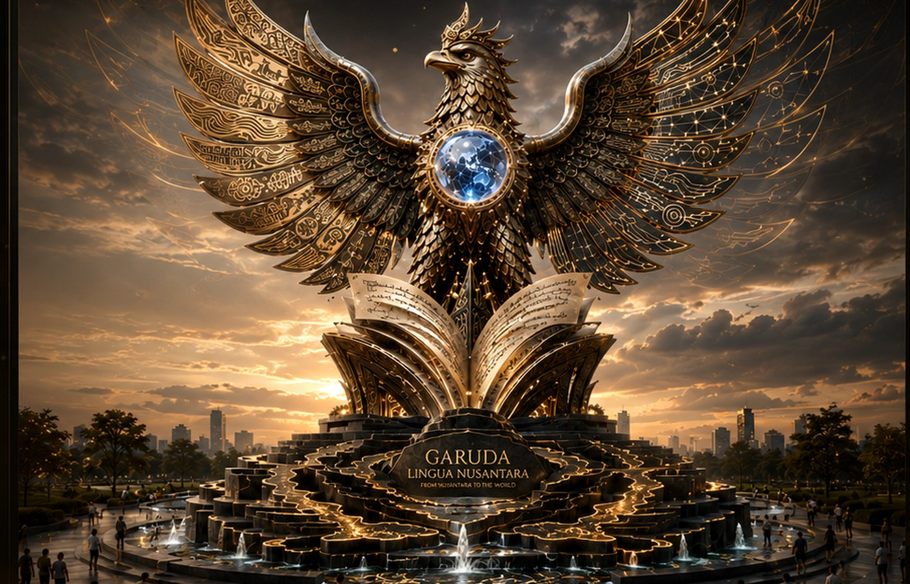

Garuda Head & Crown
Vigilance, wisdom, ethical leadership, and the dignity of scholarship.
Monument of Language, Knowledge, and Global Harmony
An interactive scholarly monument where Garuda, manuscript, luminous orb, wings, and archipelagic base become connected learning routes for language education, pronunciation, intelligibility, AI literacy, ESP, digital learning, ethics, and heritage.

Design Philosophy
Every element is designed as a symbolic learning architecture. Visitors do not only observe the monument; they enter a guided academic route where each visual component becomes a field, a task, and a reflective learning experience.
Vigilance, wisdom, ethical leadership, and the dignity of scholarship.
Global intelligibility, shared meaning, and international academic connection.

Teaching, curriculum, research writing, and knowledge creation.
Accent diversity, ELF pronunciation, and the rhythm of many voices.
AI literacy, digital networks, and responsible educational innovation.
Archipelagic heritage, multilingual memory, and cultural foundations.
Interactive Field Routes

Integrated English Learning
Each field route contains materials, English-skill tasks, assessment, speaker support, AI-coach guidance, and a reflective learning cycle.
Manuscript / Open Book
Nusantara Voice Routes
Select a province directly on the Garuda-themed Indonesia map. Each province opens voice prompts, field routes, English tasks, material access, recording, and QR access.
Scholarly Documentation
A curated academic dossier for documenting the monument concept, research-based learning routes, international interpretation, and field integration.
Garuda Lingua Nusantara frames Indonesian cultural identity as a global academic learning architecture. It connects heritage, language, pedagogy, technology, ethics, and international intelligibility.
Eight symbolic routes transform monument parts into ELT, ELF pronunciation, global intelligibility, AI literacy, ESP, digital learning, research ethics, and Nusantara heritage learning experiences.
QR access, province voice routes, speaker support, assessment tasks, reflection prompts, and admin-created materials provide evidence that the monument functions as a learning environment.
The monument communicates local identity through a globally relevant framework: intelligibility, multilinguality, AI literacy, digital pedagogy, and responsible academic culture.
Content Control
Enter the PIN to open the content dashboard.